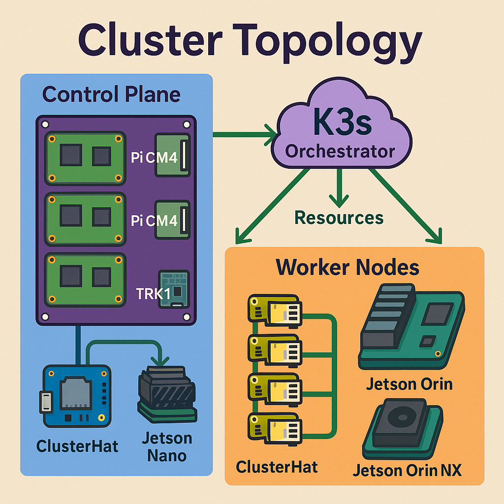

Dr. Mohamed El-Hadedy • RSCL @ Cal Poly Pomona
mealy@cpp.edu | 909-869-2594
NASA MINDS 2019 NASA MINDS 2020 NASA MINDS 2021 NASA MINDS 2022 NASA MINDS 2023 NASA MINDS 2024 NASA MINDS 2025
The Ptah project is an innovative curriculum and reference implementation designed for the emerging field of secure edge-AI in space and terrestrial applications. Combining hardware diversity—RISC-V accelerators, Raspberry Pi clusters, and NVIDIA edge GPUs—with state-of-the-art cryptography (post-quantum lattice schemes and lightweight AEAD), Ptah demonstrates how to architect resilient, future-proof systems under stringent power, weight, and environmental constraints. Participants will learn to deploy containerized microservices across heterogeneous clusters, orchestrate workloads with K3s, instrument telemetry pipelines with PQC signatures, and perform real-time monitoring using Prometheus and Grafana. Over a 15-week course, students engage in hands-on labs, benchmarking, and system integration, culminating in a comprehensive final quiz covering cryptography, orchestration, hardware design, and performance evaluation.
Imagine a future where quantum computers render today’s encryption obsolete in minutes. To safeguard critical spacecraft and edge-computing nodes against that threat, we turn to Post-Quantum Cryptography (PQC). Algorithms like CRYSTALS-Dilithium and CRYSTALS-Kyber are built on mathematically rigorous lattice problems—challenges so complex that even a million-qubit quantum computer would take centuries to solve them.
In the harsh environment of space, where remote satellites and deep-space probes cannot be patched on the fly, PQC ensures that firmware updates remain authentic and unforgeable for decades. On terrestrial edge systems—drones, unmanned rovers, and IoT sensors—“harvest-now, decrypt-later” attacks become futile because every telemetry packet, command stream, and key exchange is secured against future quantum decryption.
Why Lattices? Lattice-based schemes provide compact keys and fast operations without sacrificing security. - Dilithium delivers robust digital signatures, so every software bundle, sensor reading, or inter-device handshake bears an unbreakable quantum-resistant stamp. - Kyber enables ultra-secure key-exchange, allowing ground stations to establish shared secrets with spacecraft or edge nodes in a way that remains confidential even under quantum attack.
By integrating PQC into our Ptah framework, we not only future-proof critical systems but do so with performance tuned for power-and-weight-constrained platforms. The result is a security foundation that remains unshakable in the quantum era—because in space, tomorrow’s threats demand today’s unbreakable cryptography.
While traditional ciphers like AES excel in data centers, they’re too heavy for tiny, battery-powered edge nodes. Lightweight cryptography fills that gap by delivering strong security with minimal footprint—CPU cycles, RAM, and power.
| Feature | AEAD (e.g. Ascon) | Block Cipher + MAC (e.g. AES-GCM) |
|---|---|---|
| Encryption + Auth | Single pass, atomic | Two steps (encrypt then tag) |
| Code Size | ≈2–5 kB | ≈10–20 kB |
| RAM Usage | ≈200–500 bytes | ≈1–2 kB |
| Throughput | 2–5 cycles/byte | 10–15 cycles/byte |
| Security Goal | Confidentiality & Authenticity | Confidentiality & Authenticity |
| Property | Value |
|---|---|
| Permutation Size | 320 bits (5 x 64-bit lanes) |
| Rate | 64 bits / 8 bytes per absorption/squeeze |
| Initialization Rounds | 12 |
| Intermediate Rounds | 6 |
| Finalization Rounds | 12 |
| Key Size | 128 bits (optional 256 bits) |
| Nonce Size | 128 bits |
| Tag Size | 128 bits |
| Performance (Cortex-M4) | ≈1 MB/s |
ASCON’s design is built around a sponge construction, where data and keys are absorbed into an internal state that is repeatedly permuted. This single-pass approach (absorb-permute-squeeze) gives both encryption and authentication in one go, cutting code size and RAM needs by up to 50% compared with AES-GCM on the same hardware.
| Security Aspect | ASCON (128-bit key) | AES-128 (GCM) |
|---|---|---|
| Bit-security | ≥ 128 bits | 128 bits |
| Integrity Bound | 2^64 forgery bound | 2^64 forgery bound |
| Resistance to Side-Channel | Simple permutation—easier to mask | Complex S-boxes—harder to mask |
By choosing ASCON for Ptah’s edge modules, we ensure each micro-controller—or even a small FPGA slice—can authenticate and encrypt telemetry with minimal overhead, leaving headroom for sensor processing and control loops.
Managing a distributed Edge-AI/PQC cluster requires a lightweight yet powerful orchestrator. Below we compare three leading container orchestration platforms on footprint, feature set, and resource utilization—then dive deeper into how GPU scheduling and CPU allocation work in K3s for drones and UGVs.

| Framework | Binary Size | Memory Overhead1 | Supported APIs | Ideal Use Case |
|---|---|---|---|---|
| Docker Swarm | ~200 MB | ~150 MB | Core Swarm, Stacks | Simple clusters & rapid prototyping |
| K3s | ~50 MB | ~70 MB | Kubernetes v1.x (core) | Edge/IoT & power-constrained nodes |
| Kubernetes | ~1 GB+ | ~1 GB+ | Full k8s API | Enterprise datacenters |
1 Memory measured as RSS of control-plane components on a baseline Pi 4.
In K3s, you can label nodes with cpu and gpu capacity, then request them in your Pod specs. Below is an example of how a PQC service and an AI inference service would request resources:
# PQC signature service (runs on any CPU node)
resources:
requests:
cpu: "0.5"
memory: "256Mi"
limits:
cpu: "1"
memory: "512Mi"
# AI inference service (runs on GPU-enabled node)
resources:
limits:
nvidia.com/gpu: 1
memory: "1Gi"
| Node Type | CPU Cores | Clock (GHz) | GPU Cores | Approx. Throughput |
|---|---|---|---|---|
| Raspberry Pi CM4 | 4 | 1.5 | – | ~200 Dilithium ops/sec |
| TRK1 (Rockchip RK3588) | 8 | 2.4 | – | ~1 200 Dilithium ops/sec |
| Jetson Nano | 4 | 1.43 | 128 (Maxwell) | – GPU: ~500 ASCON ops/sec – CPU: ~400 Dilithium ops/sec |
| Jetson Orin NX | 6 | 2.2 | 1024 (Ampere) | – GPU: ~5 000 ASCON ops/sec – CPU: ~800 Dilithium ops/sec |
cpu: "0.1") with Ascon AEAD for telemetry, preserving battery life.
nodeSelector and affinity to ensure heavy workloads land on TRK1/Orin, and lightweight tasks run on Pi-class nodes.
By using K3s with fine-grained resource requests and node labels, you can orchestrate a heterogeneous cluster that maximizes both performance and power-efficiency—crucial attributes for computer architects designing next-generation edge-AI & space systems.
GPS modules feed data into telemetry pods, which then sign/encrypt readings with PQC services. On drones (Pi Zero via ClusterHat) and vehicles (TuringPi), orchestration ensures reliable data collection, security, and automatic restart on failures.
We package each service (crypto, telemetry, monitoring) into containers deployed as pods under K3s. Pods can be scaled, self-healed, and scheduled onto the most appropriate hardware (e.g. GPU pods on Jetson Orin).
Using Prometheus to scrape metrics (CPU, memory, crypto ops/sec, network) and Grafana dashboards, we visualize resource usage and cryptographic performance in real time, enabling alerting and bottleneck analysis.
When you’re ready, dive into the comprehensive 100-question quiz covering every module. You’ll get instant feedback on each answer—all on one page.
Special thanks to NASA (MINDS), U.S. Navy, AMD/Xilinx, NVIDIA, AFRL, and RSCL for hardware, funding, and expertise that made this course possible.